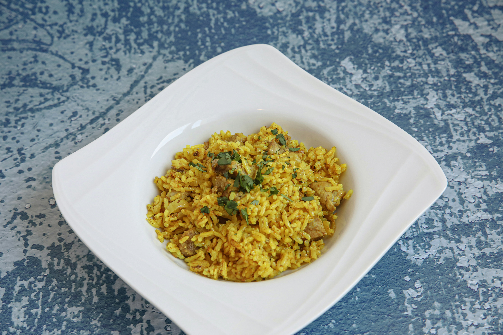

Pilau
Home

Description
Pilau is a fragrant and flavorful rice dish widely enjoyed along the East African coast, especially in Kenya and
Tanzania. Traditionally cooked with whole spices such as cumin, cardamom, cloves, and cinnamon, pilau has a warm
aroma and rich taste that makes it a favorite for family meals and celebrations. In many Kenyan homes, it's
commonly served with beef, chicken, or vegetables and accompanied by kachumbari (a fresh tomato and onion
salad).
This instant Kenyan pilau rice recipe simplifies the traditional method while preserving the classic spices and
taste. Using quick-cooking techniques and readily available ingredients, you can prepare a delicious pot of
pilau in much less time without sacrificing flavor. It's perfect for busy days when you still want a
comforting, authentic East African meal.
Ingredients
- 1 tablespoon vegetable oil
- 1/2 teaspoon cumin seeds
- 1/4 cup diced red onion
- 3/4 tablespoon garam masala
- teaspoon ground turmeric
- 1/2 teaspoon salt
- 1 ½ cups vegetable broth
- 1 cup uncooked basmati rice, rinsed and drained
- ½ cup frozen peas and carrots
- 1 bay leaf
Steps
- Turn on a multi-functional pressure cooker (such as Instant Pot®) and select Saute function. Heat oil in the
pot. Add cumin seeds and stir until they just start to pop. Stir in onion and cook until they begin to
soften, about 2 minutes. Season with garam masala, turmeric, and salt. Add vegetable broth, rice, frozen
peas and carrots, and bay leaf; stir until well combined.
- Close and lock the lid. Select high pressure according to manufacturer's instructions; set timer for 5
minutes. Allow 10 to 15 minutes for pressure to build.
- Release pressure using the natural-release method according to manufacturer's instructions, 10 to 40
minutes. Manually release any remaining pressure. Unlock and remove the lid. Remove bay leaf. Taste rice and
adjust seasoning if necessary before serving.